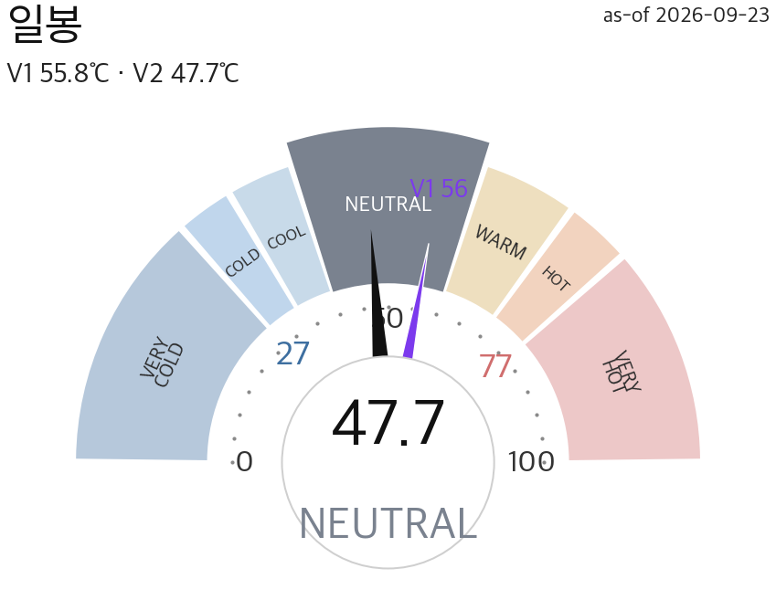
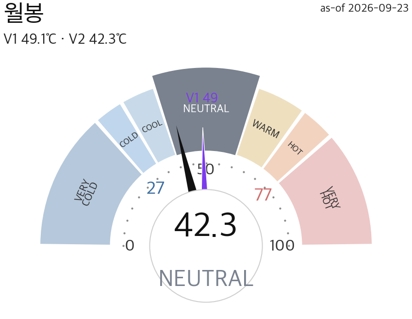
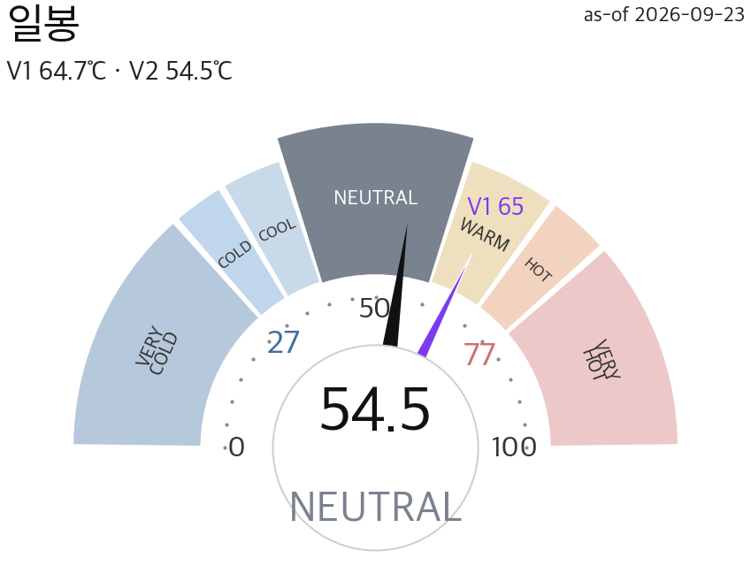
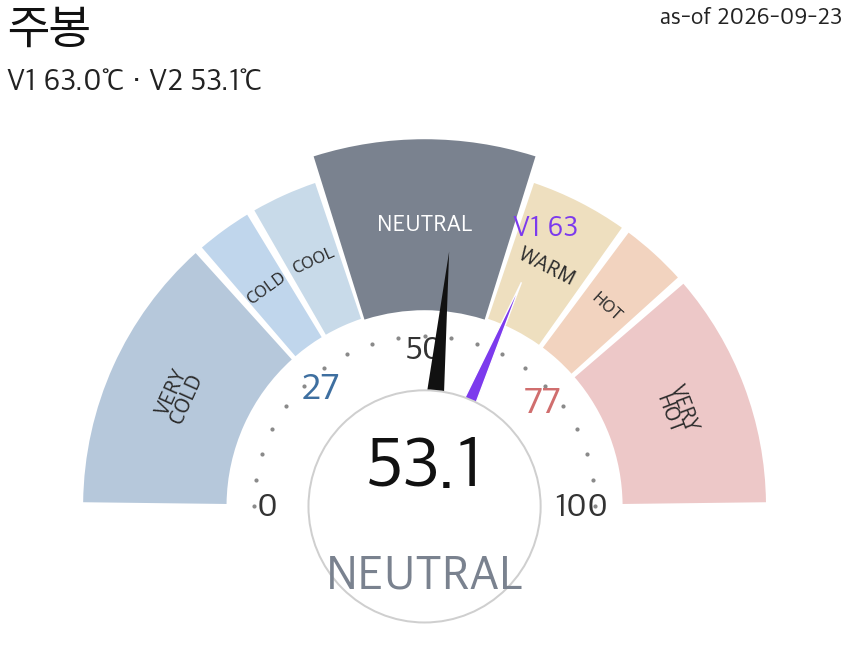
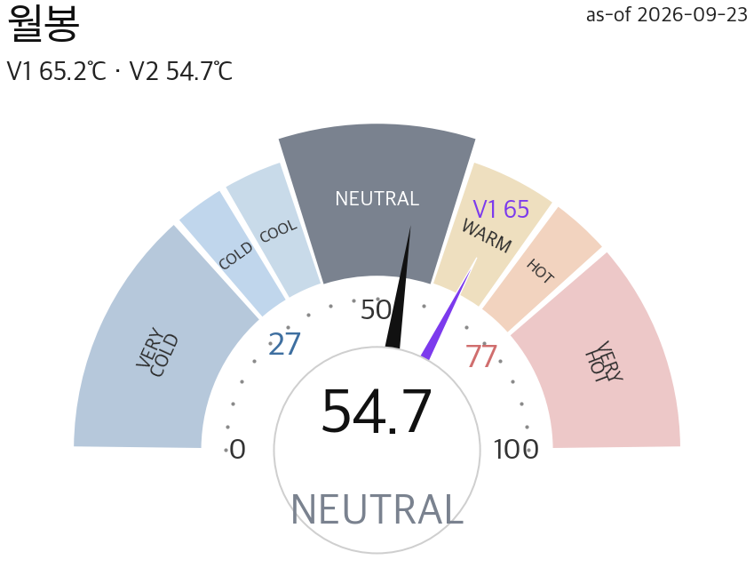
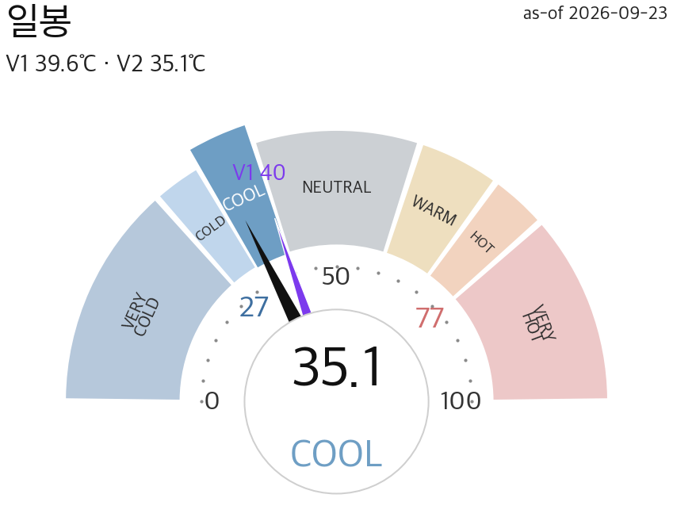
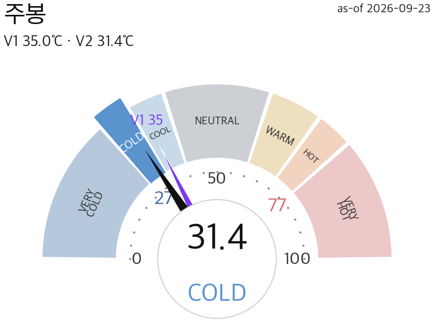
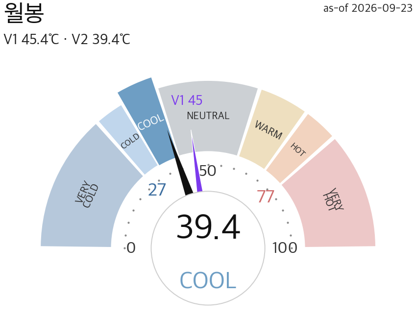

🇰🇷 KRMARKET TEMP3지수 · 온도·반전 15섹션2026-09-23 · 정규장 마감 🇰🇷 16:02 KST · 🇺🇸 03:02 ET · By Opus 4.8
통합 NEUTRAL 47.67℃ · 코스피200 NEUTRAL 54.5℃ · 코스닥150 COOL 35.15℃
코스닥150 냉각(COOL) 진입 · 코스피200 NEUTRAL · 통합 NEUTRAL · 반전 미armed · 1/4 온도 개요
종합 판정 · 지수 고점/저점 (최우선)
중립·방향 탐색
🔥
3분할 온도 카드
통합·코스피200·코스닥150 — V1/V2·존·Δ·게이지·폭·팬·armed
V2 47.67 · V1 55.84 · Δ-8.5

전일대비 V1 ▼-7.4 · V2 ▼-8.5

전월대비 V1 ▼-11.1 · V2 ▼-10.3
📐 팬 = 개별 지수 세트
🎯 미armed(대기)
V2 54.5 · V1 64.67 · Δ-8.5

전일대비 V1 ▼-7.5 · V2 ▼-8.52

전주대비 V1 ▲+10.27 · V2 ▲+7.91

전월대비 V1 ▼-11.13 · V2 ▼-10.31
📐 고점 +5.6%저점 −5.7%
🎯 미armed(대기)
V2 35.15 · V1 39.65 · Δ-6.0

전일대비 V1 ▼-4.23 · V2 ▼-5.98

전주대비 V1 ▲+10.13 · V2 ▲+7.79

전월대비 V1 ▼-12.94 · V2 ▼-11.71
📐 고점 +4.5%저점 −6.1%
🎯 미armed(대기)
📈
지수별 대시보드
종가·등락·존·시장폭·수급 3주체 (3줄)
지수타입
마켓온도
지수(종가·상승률)
B&B(시장폭)
외국인
기관
개인
통합 (KS200+KQ150)
NEUTRAL
–
폭 45% BEARISH 🌧️
-5,773
+3,296
-13,879
코스피200
NEUTRAL
113,145 ▲+1.13%
폭 28% VERY BEARISH 🥶
-5,312
+3,226
-14,190
코스닥150
COOL
14,150 ▲+1.65%
폭 67% NEUTRAL ⚖️
-461
+70
+311
※ 수급 = 시장 전체(코스피·코스닥) 3주체 순매수 · 통합 = 코스피+코스닥 합 · 지수(KS200/KQ150)와 별개
🔀 지수 양극화 부분 양극화 대형(코스피200) NEUTRAL 54 ↔ 성장(코스닥150) COOL 35 · 온도차 대형(코스피200) +19.4 · 폭차 -39%p※ 대형↔소형·성장 온도 격차 = 스타일 쏠림 계량(SSOT divergence_bands). 존폭 앵커 잠정 밴드 — 없음<8·경미8~16·부분16~26·심함≥26
▶ 1/4 판정·온도카드·대시보드 · 2/4 온도 그래프 · 3/4 팬·반전 · 4/4 촉매·시나리오·매크로 · By Opus 4.8 · ⓒ NixStock